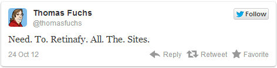
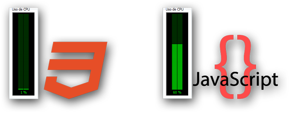

Soportado por la gran mayoría de navegadores de escritorio aunque con prefijos propietarios.
Internet Explorer es el que lleva más retraso, siendo IE9 el que empieza a dar soporte (aunque las animaciones, transiciones, degradados y text-shadow quedan para IE10+)
Muchas de las imágenes en los sitios Web presenciales son degradados, sombras, bordes y botones.
Se gana velocidad de carga al eliminar gran parte de las imágenes.
Interfaces más limpias.
Menos volumen de etiquetas HTML y de Javascript.
Las imágenes se reducirán a iconos y logotipos.
Información
Nombre
Apellidos
Descripción
Ventajas en plataformas móviles
Perfecto para pantallas Apple Retina / HD (pantallas con mucha densidad de píxeles), ya que no afectará la calidad de imagen. Esto nos ahorra el tener que hacer las imágenes con el doble de tamaño.
Soporte de un mismo sitio Web para varios dispositivos gracias a las Media Queries.
Web βeta
La Web todavía está naciendo, la Web todavía es βeta.
Las media queries nos permiten adaptar el diseño según el dispositivo móvil desde el que acceda el usuario.
@import url('ipad.css') only screen and (max-device-width: 1024px);
@import url('ipad-retina.css') only screen
and (max-device-width: 2048px)
and (min-device-pixel-ratio:2);
@import url('iphone.css') only screen and (max-device-width: 480px);
@import url('iphone-retina.css') only screen
and (max-device-width: 640px)
and (min-device-pixel-ratio:2);
Animaciones y ahorro de recursos
Transiciones: las transiciones actúan sobre los valores de las propiedades de un elemento, cambiándolo gradualmente si este se ha modificado.
Animaciones: las animaciones, de igual manera que las transciones actúan sobre los valores de las propiedades de un elemento, pero de manera explícita.
Las librerías JavaScript que cumplen estas características (jQuery, script.aculo.us, ZeptoJS...) limitan el uso de algunas propiedades y requieren más recursos por cambiar los valores a través de funciones de timing.

Transiciones
div.transition-demo {
width:100%;
height:120px;
background:red;
transition-property:background; /* Propiedades CSS del elemento, separadas por
comas, que serán modificadas en el caso de que cambien. Para observar todas
bastará con poner 'all'. */
transition-duration:1s; /* Tiempo que tardará en ejecutarse la transición. */
transition-timing-function:linear; /* Curva de velocidad del efecto de
transición. */
transition-delay:0s; /* Tiempo que tardará la transición en ejecutarse una vez
que la propiedad CSS observada cambie. */
}
div.transition-demo:hover {
background:blue;
}
Animaciones
@keyframes animation-demo
{
0% { background-color: red; }
25% { border-radius: 100px; }
75% { transform: rotateY(180deg); }
100% { border-radius: 0px; background-color: blue; }
}
div.animation-demo {
width:600px;
margin:0 auto;
height:120px;
animation-name:animation-demo; /* Nombre de la animación definida en el
@keyframes. */
animation-duration:4s;
animation-timing-function:linear;
animation-delay:0s;
animation-iteration-count:infinite; /* Número de repeticiones que se ejecutará
la animación, 'infinite' lo hará indefinidamente. */
animation-direction:alternate; /* Especifica si la animación debe reproducirse
inversamente una vez finalizada. Solo tendrá efecto en animaciones con más
de una iteracción. El valor 'normal' se reproducirá hasta el final pero volverá
al inicio de golpe. */
}
Timing functions
ease (default)
linear
ease-in
ease-out
ease-in-out
cubic-bezier
Dependiendo del efecto que se le quiera dar a la animación se escogerá una timing function u otra, hay herramientas que nos facilitan la elección como cubic-bezier.com.
3D
CSS3 brinda un conjunto completo de métodos para construír una animación 3D: matrix3d, translate3d(x,y,z), translateX(x), translateY(y), translateZ(z), scale3d(x,y,z), scaleX(x), scaleY(y), scaleZ(z), rotate3d(x,y,z,angle), rotateX(angle), rotateY(angle), rotateZ(angle), perspective(n)